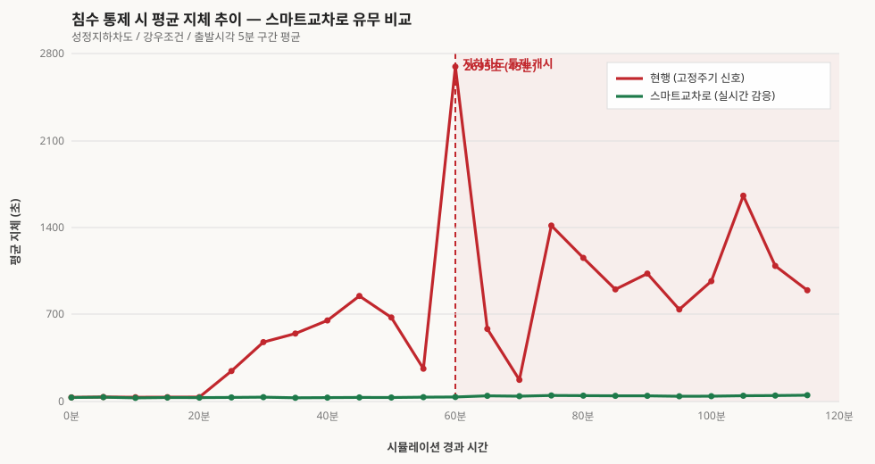

SUMO 미시 시뮬레이션 검증 결과
국가표준노드링크 → SUMO (노드 693 · 엣지 1,423 · 신호 13개소) · 성정지하차도 통제 시나리오
현행 (고정주기)
총지체 227.6
우회차량 평균 119분 · 미완주 77대
→
스마트교차로 (감응)
총지체 15.4
우회차량 평균 4.3분 · 전량 완주
총지체 93.2% 감소 · 미완주 77대 → 0대 (교차로 1곳 감응 제어만으로)

핵심: 통제 전 차량을 미리 우회시키는 것이 아니라, 우회로 교차로(방죽안오거리) 신호를 실시간 감응 제어로 전환하는 것이 효과의 본질입니다.